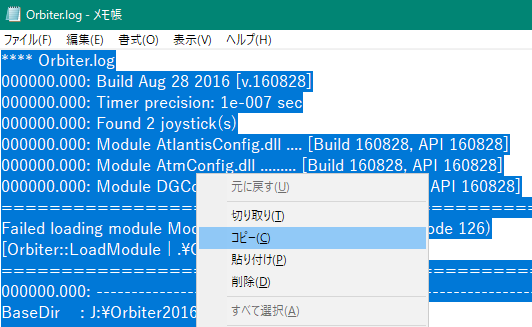

バグ・トラブルを報告する
ゲームが起動しない、正常にプレイできないなどのトラブルに遭遇したら、以下のフォームにて報告してください。
回答はこのページの下部に記載します。
主要なバグについては、以下のページにまとめてあります。
バグ報告の前に一度確認をお願いします。
既知の不具合
バグ・トラブル報告フォーム
以下のリンクをクリックして、問題を報告してください。
Orbiter.logをコピーする
このフォームではOrbiter.logの貼付が必須です。
Orbiterフォルダを開いて、Orbiter.logというファイルを探す。
Orbiter.logをメモ帳などのテキストエディタで開く。※
※右クリック→プログラムから開く→メモ帳を選択
右クリックして、すべて選択→コピーする。

上のフォームを開いて貼り付ける。
シナリオファイルを調べる
任意ですが、問題のあるシナリオファイルを教えていただけると回答しやすくなります。
Scenariosフォルダを開く。
問題のあるシナリオファイルを右クリック。
名前の変更をクリックして、ファイル名をコピーする。
スクリーンショットを共有する
任意ですが、ゲーム画面などの画像を共有していただけると回答しやすくなります。
Imgurなどの時間制限のないアップローダーを利用するようお願いします。
回答
いただいた質問の内容によっては、こちらから詳細について質問することがあります。
そのような場合は、お手数ですがもう一度フォームから報告してください。
2020/06/25
orbiter100830及び同100830のパッチをインスートルの上,Project Apollo - NASSPの最新版をインスートルして、スイッチ類の音が鳴らないのはなぜでしょうか？
OrbiterSound.dllがゲームに読み込まれていません。
以下のページを参考にして、OrbiterSoundを有効化してください。
Orbiter2010のダウンロード+インストール - モジュールの有効化
すでにモジュールを有効化している場合は、もう一度OrbiterSoundをインストールしてください。
Orbiter2010のダウンロード+インストール - OrbiterSound
「100830のパッチ」ということですが、orbiter100830ではパッチ導入の必要はありません。
パッチというのがどのファイルを指しているのか、教えていただけないでしょうか。
2021/05/20
orbiter100830 をインストール Cizurator氏のSTAR TREK UNIVERSEをプレイしたところ宇宙船が見えないし画面が正常に描画されない
以下のページを参照して、シンボリックリンクを作成してください。
解決しない場合は、お手数ですが上のフォームから再度質問してください。
2021/05/22
Cizurator氏のSTAR TREK UNIVERSE及び PETR ČÍEK 氏のMOBILE KLINGON FLEET for STAR TREK UNIVERSE をプレイしてみたところクリンゴン艦隊が描画されませんでした。
残念ながら、こちらの環境では問題を再現できませんでした。
そこで、KLINGON FLEETを動作させるためのパッチを作成してみました。
ConfigフォルダとScenariosフォルダをコピーして、Orbiterフォルダに上書き。
STAR TREK KLINGON FLEETシナリオでゲームを開始してください。
解決しない場合は、お手数ですが上のフォームから再度質問してください。